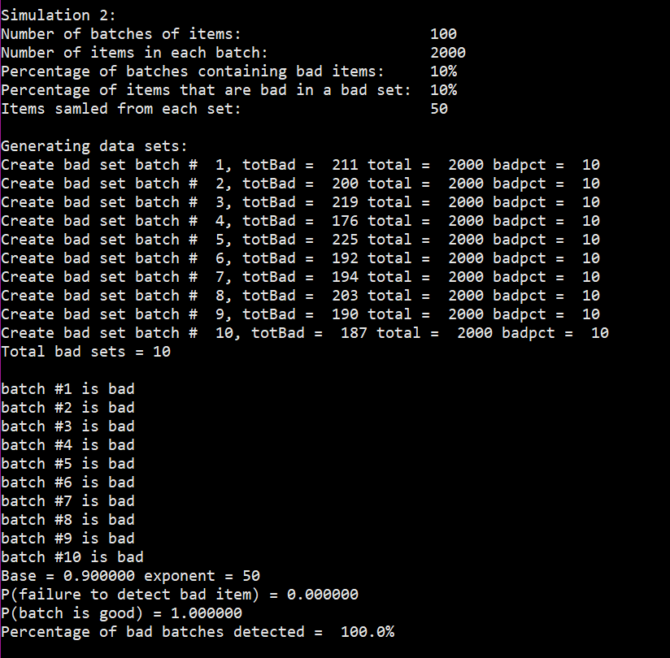
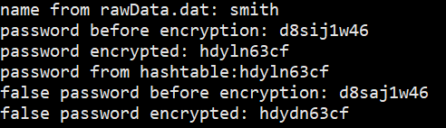
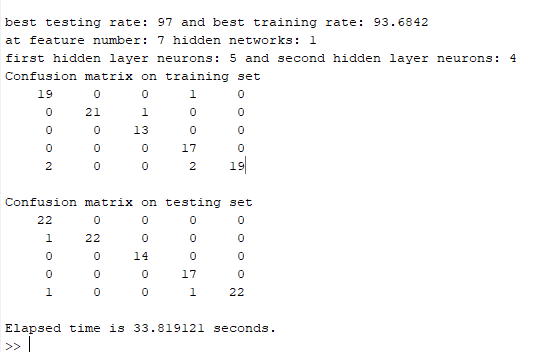
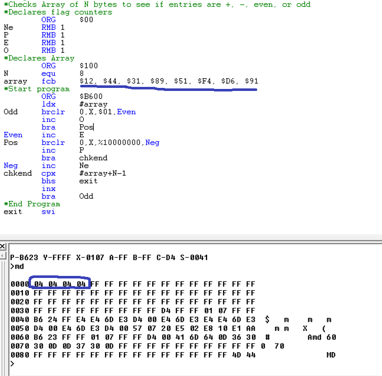

This section is based on all the coding that I have learned through university. As mentioned
before on the main page my coding knowledge consists of HTML, C, C++, Java, Javascript, Assembly, and MatLab.
With my most comfortable languages being C and C++ with Java and MatLab coming in a close second.
What's on This Page
- Monte Carlo Simulation(C)
- Hash tables(C)
- Semaphore/Threading(C++)
- Pattern Recognition(MatLab)
- Microprocessors(HC11/Assembly)
Monte Carlo Simulation

To the left is a program that I made that simulates the Monte Carlo algorithm which is a computer algorithm that determines
the sampling rate that is needed for a batch of items to catch a certain percentage of bad batches. This is/can be used
in an industrial setting such as assembly lines. This specific program has inputted a set percentage of things to be wrong and
then makes random items in bad batches. Then it samples all the batches to see if it can find a bad batch.
Hash tables

This is the results of a program I made that took 80000+ usernames and passwords and encrypted
them. It then when given a username went through the hash table and pulled the encrypted password
that was stored to test if the programmed worked.
Semaphore/Threading
I have written multiple programs that utilized semaphores to prevent race conditions when performing
multi-threaded actions and commands. I have no picture showing this because what I did program was just
multiple test programs that do not really give understandable screenshots.
Pattern Recognition

I created a program that tested a neural network with multiple different training scenarios and compared the output to determine
the best training scenario. This program was used to differentiate between 5 different fish using a training file of multiple pictures
of the 5 different fish. As you can see on the left, I created a neural network with 97% accuracy in 33.82 seconds.
Microprocessors

I am familiarized with microprocessors like the HC11 and the assemble code that was needed to program the board. I programmed code that handled
input, output, trigger interrupts, timer interrupts, and most other things needed for an imbedded system. The program to the left looked at
an array of numbers and determined how many numbers were positive, negative, even, and odd. I used this picture because it seemed easiest to
demonstrate without the physical board shown.